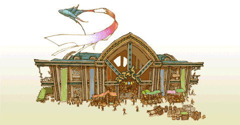
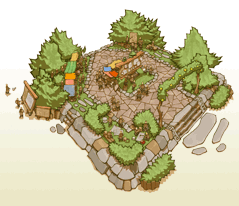

22
|
Building Types |
 |
Here is a list of some of the structures you can build in your kingdom.
● Houses  Small House : A house for two. Requires minimal amounts of elementite. Good for boosting initial realm income. Recalls one aspiring adventurer.
Small House : A house for two. Requires minimal amounts of elementite. Good for boosting initial realm income. Recalls one aspiring adventurer.Spacious House : Requiring large amounts of elementite, the cost is offset by the increased income from the bigger families recalled to this house. Also recalls one aspiring adventurer. |
● Citizen Shops
Bakery : The main source of food for citizens. Citizens that make purchases here go home happy. Emporium : The trade center of the realm, citizens purchase exotic goods here. Imported foreign items also give inspiration to other shops and within the realm.  |
● Adventurer Shops
Weapon Shop : Sells various weapons tailored to adventurers. Fund research here to boost adventurers' attack power.  Armor Shop : Sells various armor tailored to adventurers. Fund research here to enhance adventurers' survivability.
Armor Shop : Sells various armor tailored to adventurers. Fund research here to enhance adventurers' survivability.Item Shop : Sells various items tailored to adventurers. Potions and antidotes are necessities for parties without healers. |
● Adventurer Buildings
 White Mage Temple : Allows access to white mages and white mage spells. Funding research will grant you access to more powerful spells.
White Mage Temple : Allows access to white mages and white mage spells. Funding research will grant you access to more powerful spells.Black Mage Academy : Allows access to black mages and black mage spells. Funding research will grant you access to more powerful spells. Training Hall : Allows access to warrior abilities and extra EXP through training. Gaming Hall : Allows access to thieves and thief abilities. Other adventurers also visit this facility to relax and gain extra gil. |
● Special Buildings
 Guild Hall : The central administration building for adventurer affairs. You can raise the number of adventurers you can sanction as well as their pay here. Tavern : Allows adventurers to form parties to tackle challenging dungeons. You can also form your own parties here. Inn : Allows traveling adventurers and merchants to visit the realm. |
● Parks
 Fountain Park : The greenery refreshes the hearts of citizens and adventurers alike. Bulletin Park : Adds a bulletin board to the realm, allowing you to post multiple behests. |
 |
 |
 |